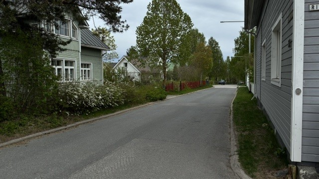

Tykin tarina
Wanha Tykki on historiallinen ja yhteisöllinen asuinalue, jossa vanhat rakennukset, yhteiset tapahtumat ja alueen ainutlaatuinen tunnelma elävät edelleen vahvasti mukana arjessa.

First slide label
Some representative placeholder content for the first slide.
Second slide label
Some representative placeholder content for the second slide.
Third slide label
Some representative placeholder content for the third slide.
Wanha Tykki
Wanha Tykki tunnetaan viihtyisästä ympäristöstään, historiallisista rakennuksistaan ja aktiivisesta yhteisöstään. Alueella järjestetään tapahtumia ympäri vuoden aina joulukalenterista kesäkirppiksiin ja kahviloihin.
Alueen historia ulottuu vuosikymmenten taakse, ja monet rakennuksista ovat säilyttäneet alkuperäisen tunnelmansa nykypäivään asti. Wanha Tykki on vuosien aikana muuttunut ja kehittynyt, mutta alueen yhteisöllisyys ja ainutlaatuinen henki ovat säilyneet sukupolvelta toiselle.
Tulevat tapahtumat

Wanhan Tykin kirpputori
Tule kokemaan kirpputorielämyksiä upealle vanhalle puutaloalueelle!